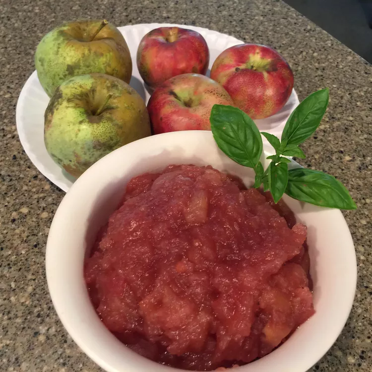

Apple Chutney

Apple chutney is a great companion for so many dishes — use it to glaze pork
chops or serve with a selection of cold meats and cheese. It's delicious on
baked Brie!
Ingredients
- 15 tart apples - peeled, cored, and finely chopped
- 1 yellow onion, quartered
- 3 (1-inch) pieces fresh ginger root, peeled
- 1 cup white wine vinegar
- ½ cup white sugar
- ½ cup brown sugar
- ½ teaspoon cinnamon
- ½ teaspoon white pepper
- ½ teaspoon ground cardamom
- ¼ teaspoon ground nutmeg
Directions
-
Place apples, onion, ginger, vinegar, white sugar, brown sugar, cinnamon,
white pepper, cardamom, and nutmeg into a large saucepan; bring to a boil,
stirring often. Reduce heat to low, cover, and simmer, stirring frequently,
until the apples are tender, about 30 minutes. Add some water if necessary
to keep the ingredients moist.
-
Remove onion and ginger if you like; let the chutney cool, then transfer
into a sterilized jar or container, seal, and store in the refrigerator
until ready to serve.